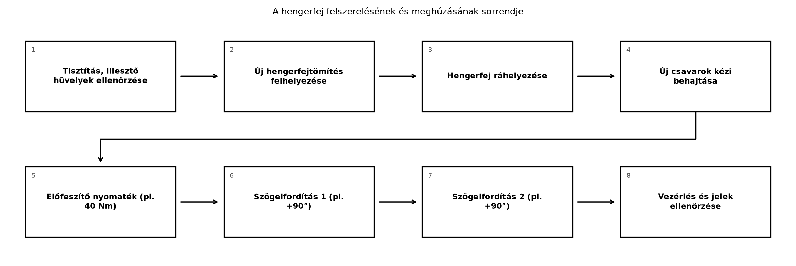

Két műhelyi helyzet nagyon gyakran visz hengerfej-javításhoz. Az egyik: az ügyfél azt mondja, hogy a motor forrón leállt, azóta fehér gőz jön a kipufogóból, és a kiegyenlítő tartályban buborékol a hűtőfolyadék. Ekkor a hengerfejtömítés hibája gyanús. A másik: az autó egyenlőtlenül jár, kékes füstöt ereget indításkor, és lassan fogy az olaj – ilyenkor a szelepvezetők, a szelepszártömítések vagy a szelepek tömítettsége kerül gyanúba. A hengerfej a motor legpontosabban összeszerelt részegysége: ha itt nem a gyártói sorrendben és értékekkel dolgozunk, a hiba rövid idő alatt visszatér, vagy a motor súlyosan károsodik.
Képzeljünk el egy négyhengeres, 16 szelepes Otto-motor hengerfejét függőleges metszetben. Alul az égéstér teteje, körben a hűtőköpeny és az olajjáratok. A hengerfejben két szívó- és két kipufogószelep áll ferdén, hegyük a henger felé néz. A szelepszár acél henger, a tányér hátoldala a szelepüléshez illeszkedik. A szárat a hengerfejbe préselt vagy beszerelt szelepvezető cső vezeti meg. A szár végénél a szeleprugó és a rugótányér, felette a szelepemelő tányér vagy hidraulikus kiegyenlítő, legfelül pedig a vezérműtengely bütyke. A vezérműtengelyt a hengerfej tetején csapágybakok tartják, és fogasszíj, lánc vagy fogaskerék hajtja a főtengely felől.
Definíció. A hengerfej síksága a tömítőfelület valós síktól való eltérése. A gyártó megengedett maximális eltérést ad meg, például 0,05 mm hosszirányban és 0,03 mm keresztirányban (ellenőrizendő: gyártói adat).
Definíció. A szelep tömítettsége azt jelenti, hogy a zárt szelep tányérja a teljes kerületén egyenletes, keskeny záróperem mentén fekszik fel a szelepülékre, és a rés nem enged át gázt vagy folyadékot.
Definíció. A szelephézag a vezérlésben a szelepemelő (vagy hidraulikus elem) és a szelepszár vége közötti, hideg vagy meleg motorra megadott hézag. Feladata a hőtágulás kiegyenlítése, hogy a szelep minden hőmérsékleten biztosan zárni tudjon.
Összefüggés. Tányéros–csavaros szelepemelőnél az új tányérvastagság:
ahol a tányér vastagsága, a szelephézag. Ha a mért hézag túl kicsi, vékonyabb tányér kell, hogy a hézag növekedjen.
Definíció. A vezérlési idő a szelepek nyitási és zárási szöge a főtengely-szögben kifejezve. A beállítás alapja a főtengely és a vezérműtengely gyártói jelének egybeállítása; a részletes jeleket és rögzítőszerszámokat az Vezérműhajtás alfejezet ismerteti.
A hengerfej jellemzően könnyűfém öntvény, a motorblokkhoz hosszú, nyúló hengerfejcsavarokkal rögzítik. A csavarokat általában cserélni kell, mert a szögelfordításos meghúzás során a csavar rugalmasan megnyúlik, és másodszori használatra már nem adja a tervezett előfeszítést (ellenőrizendő: gyártói adat). A hengerfejtömítés többrétegű acél vagy hagyományos lágy tömítés, feladata az égésgáz, az olaj és a hűtőfolyadék járatai közötti tömítés.
A szelepmechanizmus részei:
Az alábbi ábra (a) metszetben mutatja a felsorolt elemek egymáshoz viszonyított helyét – a szelepülék 45°-os felületét és a felfekvési szélességet (b), valamint a szelephézagot (h) a bütyök alapköre és a beállítótányér között –, (b) képsora pedig a szeleprugó-összenyomó használatát: a C-keret fent a rugótányérra, lent a szeleptányérra fekszik, a rugó összenyomása után a szelepékeket mágnessel emeljük ki; a ferdén álló összenyomóról a rugó kiugorhat (védőszemüveg!). A HTML-változatban az alkatrészek egyenként kiemelhetők, névvel és kopási jellel.
A vezérműtengely a hengerfejben csapágyazott, bütykei a szelepemelőket nyomják. A tengely csapágyhézaga, a bütyök kopása és a csapágybakok illeszkedése közvetlenül meghatározza a vezérlés pontosságát. A tengely meghajtása a vezérműhajtás alfejezetben tárgyalt fogasszíjjal, lánccal vagy fogaskerékkel történik, és a feszítőrendszert a hengerfej-szerelés után be kell állítani.
Példa 1: szelepemelő tányér méretezése.
Adott: egy 1,6 literes szívómotor szívószelepére előírt hideg hézag . A mért hézag . A kiszerelt tányér vastagsága .
Keresett: a beépítendő új tányér vastagsága .
Képlet: a fenti összefüggés.
Behelyettesítés:
Ellenőrzés: a mért hézag 0,10 mm-rel kisebb az előírtnál, ezért 0,10 mm-rel vékonyabb tányér kell. Az eredmény 3,00 mm, tehát a hézag 0,10 mm-rel nő, és megközelíti a 0,20 mm-t. A pontos hézagot beépítés után hézagmérővel újra kell ellenőrizni. ∎
Példa 2: vezérműtengely-csapágyhézag számítása.
Adott: egy vezérműtengely csapjának mért átmérője , a csapágyfurat átmérője . A gyártói előírás szerinti megengedett hézag 0,05–0,08 mm (ellenőrizendő).
Keresett: a csapágyhézag és annak minősítése.
Képlet: hézag = furatátmérő − csapátmérő.
Behelyettesítés:
Ellenőrzés: az érték a 0,05–0,08 mm tartományban van, tehát a csapágy még megfelelő. Ha 0,08 mm fölé nő, a tengely oszcillálni kezdhet, és a szelepvezérlés zajos lesz; a csapágyfuratot vagy a tengelyt felújítani kell. ∎
Síkság. A tömítőfelületet tisztítás után acélvonalzóval és hézagmérővel ellenőrizzük hossz-, kereszt- és átlós irányban. A megengedett eltérés jellemzően legfeljebb 0,05 mm (példa). Ha a hengerfej vetemedett, síkköszörüléssel csak a gyártó által megengedett minimális magasságig szabad utánmunkálni.
A két mérőfogást az alábbi ábra mutatja: (a) a vonalzó hét helyzete a tömítőfelületen (hosszirányban két oldalt és középen, keresztben, két átlóban), (b) a legnagyobb rés mérése hézagmérővel a vonalzó alatt, (c) a szelephézag mérése, amikor a bütyök alapköre néz a szelepemelő felé, (d) a bütyök lejtőjén mért – hibás – érték. A HTML-változatban a vonalzó helyzetei egymás után, illetve a bütyök forgatása lépésenként nézhető meg.
Repedés. A hengerfej repedéseinek kimutatására nyomáspróbát, festékdiffúziós vizsgálatot vagy vetemedésre gyanús esetben hűtőköpeny-tömítettségi vizsgálatot használnak. Az égéstér körüli hajszálrepedés gyakran hengerfej-cserét indokol.
Szeleptömítettség. A legáttekinthetőbb műhelyi próba: a leszerelt, összeszerelt szelepekkel ellátott hengerfejet égéstérrel felfelé fordítjuk, az égéstérbe petróleumot vagy tesztfolyadékot töltünk, és a szívó- és kipufogócsatornában figyeljük, hogy a szeleptányér körül átszivárog-e. Az enyhe átszivárgás tömítetlenségre utal. Beszerelt motornál a kompressziómérés és a henger szivárgásvizsgálata ad információt.
Szelepvezetők. A vezető belső átmérőjét mérőórás furatmérővel, a szelepszár átmérőjét mikrométerrel mérjük. A hézag megengedett maximumát a gyártó adja meg, például szívóoldalon 0,08 mm, kipufogóoldalon 0,10 mm (példa). Túl nagy hézag olajfogyasztáshoz és szelepzörgéshez vezet.
Szeleprugók. Ellenőrzendő a szabad hossz, a ferdeség és az előírt hosszhoz tartozó rugóerő. A gyengült rugó magas fordulaton szelepúszást, azaz záráskimaradást okoz.
Vezérműtengely. Ellenőrizzük a csapfelületek és a bütyök futófelületének kopását, valamint az ütését mérőórával. A csapágyhézagot számpéldával vagy plasztikus mérőszállal határozzuk meg.
Egy középkategóriás autót túlmelegedés után vontattak a műhelybe. A motor fehéren füstölt, a hűtőfolyadék szintje csökkent. A kompressziómérés két szomszédos hengeren 8,5 és 9,0 bar értéket mutatott, a többi hengeren 12 bar körül. A hengerfej leszerelése után a tömítés a két henger között átégett volt. A hengerfej síkságát megmérve 0,09 mm eltérést találtunk, ami meghaladta a megengedett 0,05 mm-es példaértéket. A hengerfejet a gyártói minimális magasság betartásával síkköszörültettük, a szelepeket felújíttattuk, majd új tömítéssel és új csavarokkal a gyártói sorrendben szereltük vissza. A javítás után a kompresszió minden hengeren 12 bar felett volt, a hűtőfolyadék szintje stabil maradt.
Munkalap: hengerfej le- és felszerelése, szelepek és vezérlés javítása.
Cél: a hengerfejtömítés, a szelepek, a szelepülések, a vezetők és a rugók ellenőrzése és javítása; a vezérlés beállítása.
Jármű- és adatazonosítás: típus, motorszám, gyártói javítási kézikönyv, előírt nyomatékok és hézagok.
Szerszámok, mérőeszközök: nyomatékkulcs, szögmérő, dugókulcsok, szeleprugó-leszorító, tömítéseltávolító műanyag kaparó, acélvonalzó, hézagmérő, mikrométer, mérőórás furatmérő, festékdiffúziós vagy nyomáspróba-eszköz, csiszolópaszta, reszelő vagy szelepülék-maró, gyártói rögzítőszerszámok. Biztonsági korlát. A feladat tanműhelyi környezetre, oktató felügyeletére és a gyártói javítási utasítás betartására vonatkozik; a megadott értékek tanulási példák.
Munkavédelmi és környezetvédelmi lépések: az akkumulátor negatív kapcsának lekötése; a hűtőfolyadék és motorolaj zárt gyűjtőedénybe leeresztése; kesztyű, védőszemüveg használata; a motor forgó részeitől távol tartózkodás. Környezetvédelem. A fáradt olajat, hűtőfolyadékot, régi tömítéseket és olajos törlőrongyot veszélyes hulladékként, jelölt gyűjtőedénybe kell gyűjteni.
A hengerfej felszerelésének és meghúzásának sorrendjét az alábbi folyamatábra foglalja össze.

Számozott munkalépések:
Szelephézag beállítása tányéros emelőnél lépésről lépésre.
Hidraulikus kiegyenlítőnél a játékot a motorolaj-nyomás automatikusan tartja. A kiegyenlítőt benyomva ellenőrizhető: az olajjal feltöltött ép elem kézzel csak nagyon lassan nyomható be. Ha szivacsosan, gyorsan benyomódik (olajvesztés), vagy beragadt, és a játékot nem követi, az elem cserés (ellenőrizendő: gyártói vizsgálati mód).
Tünet: egy négyhengeres motor hidegen egyenetlenül jár, alapjáraton ráz, és a 2. henger kompressziója 5,5 bar, míg a többi hengeré 11,8–12,2 bar. A 2. henger száraz kompressziója 5,5 bar, nedves kompressziómérés után 5,7 bar.
Hipotézis: a nedves mérés alig javított, ami nem gyűrűkopásra, hanem szeleptömítetlenségre vagy szelepvezérlési hibára utal. A gyűrűkopásnál az olajbevonat jelentősen megemelné a kompressziót.
Mérés és ok: a szelephézag ellenőrzésekor a 2. henger kipufogószelepénél a hézag majdnem nulla volt. A szeleptányér a nem megfelelően záródó szelep miatt nem tömített, az égéstérből gáz szökött. A szelep leszerelése után a tányér záróperemén korom és helyi kiégés látszott.
Javítás: a kiégett kipufogószelepet kicseréltük, a szelepülést ülékmaróval felújítottuk, az új szelepet beillesztettük (becsiszoltuk), a vezetőhézagot ellenőriztük, a szelephézagot az előírt példaértékre állítottuk. Összeszerelés után a 2. henger kompressziója 11,5 bar lett, a motor egyenletesen járt.
Megelőzés: időszakos szelephézag-ellenőrzés a gyártó intervalluma szerint, jó minőségű olaj és a túlmelegedés elkerülése.
A hengerfejcsavarokat rossz sorrendben, teljes nyomatékkal húzzák meg. Ekkor a tömítés hullámosan ül, és először a két szélső henger közötti híd tömítetlen lesz. Helyes: a gyártói sorrend, előfeszítés, majd szögelfordítás.
A régi hengerfejcsavarok újrahasznosítása. A már megnyúlt csavar nem adja a tervezett szorítást, a tömítés hamar átfúj. Helyes: a gyártó által előírt esetekben mindig új csavart használjunk.
A szelepülék durva csiszolása házilag, például fúrógépre tett szerszámmal. Ezzel a záróperem széles, nem koncentrikus lesz, a szelep tömítetlen marad. Helyes: a szelepülék-marót és a gyártói szögértékeket használni, szükség esetén gépi felújítás.
A vezérlés szerelése után a főtengelyt csak egy irányban, vagy nem kézzel forgatják. Ha a szerelő indítóval forgatja a motort, szelep–dugattyú ütközés lehet. Helyes: kézi forgatás két fordulatig, gyártói forgásirányban.
1. feladat (A). Definiáld a szelephézagot, és írd le, miért van rá szükség a motorban.
2. feladat (A). Egy motoron a szívószelep előírt hézaga 0,20 mm. A mért hézag 0,08 mm. A kivett tányér vastagsága 3,10 mm. Számítsd ki az új tányér vastagságát.
3. feladat (B). Egy hengerfejcsavar-meghúzásnál a gyártó lépése: 40 Nm + 90° + 90°. Magyarázd el, miért nem elegendő csak a 40 Nm-es nyomaték, és miért van szükség szögekkel megadott további fordításra.
4. feladat (B). A vezérműtengely csap átmérője 28,020 mm, a csapágyfurat átmérője 28,100 mm. Az előírt legnagyobb hézag 0,08 mm. Ítéld meg, használható-e a csapágy.
5. feladat (C). Hasonlítsd össze a hengerfejtömítés-hiba és a kipufogószelep-tömítetlenség tüneteit és diagnosztikai mérési eredményeit. Milyen két méréssel különböztethetők meg?
6. feladat (D). Egy négyhengeres motor hidegen egyenetlenül jár. Kompressziómérés: 1. henger 12,0 bar, 2. henger 5,5 bar, 3. henger 11,6 bar, 4. henger 11,9 bar. A 2. henger nedves kompressziója 5,8 bar. A hűtőfolyadék szintje stabil, olajban víz nem látható. Mi a legvalószínűbb hiba, és milyen sorrendben vizsgálnád a hengerfejet és a szelepeket?
Önellenőrzés – válaszok
1. feladat megoldása. A szelephézag a szelepemelő és a szelepszár vége közötti, hideg vagy meleg motorra előírt játék. A hőtágulás miatt záráskor a hézag biztosítja, hogy a szelep teljesen a szelepülékre feküdjön.
2. feladat megoldása.
Adott: , , .
Képlet: .
Behelyettesítés: .
Ellenőrzés: a hézag 0,12 mm-rel kicsi, ezért 0,12 mm-rel vékonyabb tányér kell; az eredmény 2,98 mm. ∎
3. feladat megoldása. A hengerfejcsavar rugalmas nyúlását a nyomaték csak hozzávetőlegesen állítja be, mert a menet súrlódása és a felületi állapot nagyban befolyásolja. A szögelfordítás a csavar meghatározott megnyúlását, így az előfeszítő erőt pontosabban állítja be.
4. feladat megoldása.
Hézag: = a megengedett legnagyobb érték, tehát még éppen megfelel; kopásnyomok esetén a cserét mérlegelni kell. (Az értékek példák.)
5. feladat megoldása.
Tünetek: a hengerfejtömítés-hibánál gyakran fehér füst, hűtőfolyadék-vesztés, a kiegyenlítő tartályban buborékolás, olaj–víz emulzió. A kipufogószelep-tömítetlenség inkább kompressziócsökkenés, egyenlőtlen járás, kipufogó oldali sziszegés, olajfogyasztás lehet. Mérések: a kompressziómérés és a henger szivárgásvizsgálata. A szivárgásvizsgálatnál a tömítetlen kipufogószelep esetén a levegő a kipufogó felé hallható; a hengerfejtömítés-hibánál a hűtőfolyadék buborékol, vagy a szomszédos henger felé szökik.
6. feladat megoldása.
A 2. henger nedves kompressziója alig változik, ezért nem gyűrűkopás, hanem szeleptömítetlenség vagy vezérlési hiba valószínű. A hűtőfolyadék stabil, tehát a hengerfejtömítés valószínűleg nem érintett. Sorrend: szelephézag ellenőrzés, vezérlési jelek ellenőrzése, henger szivárgásvizsgálata a 2. hengeren, majd a hengerfej leszerelése és a szelepek, ülések ellenőrzése.
A hengerfej-javítás a tömítőfelület, a hűtőköpeny, az olajjáratok és az égéstér együttes ellenőrzésével kezdődik. A síkságot hossz-, kereszt- és átlós irányban vonalzóval és hézagmérővel mérjük; a megengedett eltérés jellemzően 0,05 mm alatti (ellenőrizendő). A repedést nyomáspróbával vagy festékdiffúzióval mutatjuk ki. A szelepek tömítettségét leszerelt hengerfejen petróleumpróbával, a beszerelt motornál kompresszióméréssel és szivárgásvizsgálattal ellenőrizzük. A szelepvezetők, szár tömítések és rugók kopását mikrométerrel, furatmérővel és hosszméréssel minősítjük. A hengerfejcsavarok meghúzása mindig gyártói sorrendben, középről kifelé haladva, előfeszítő nyomatékkal és szögelfordítással történik. A tányéros szelepemelőnél az új tányér vastagságát a mért és előírt hézag különbségével számítjuk. A vezérműtengelyt és feszítőit a gyártói jelek szerint állítjuk, majd a főtengelyt kézzel két fordulatig forgatva ellenőrizzük a vezérlési időt. Továbbvitt eredmény. Az itt ellenőrzött hengerfej, szelepek és vezérlés állapota a kenő-, hűtő- és tüzelőanyag-rendszer javítása alfejezetben a motor összeszerelése utáni próba és diagnosztika alapja.
A fizikai és gépészeti alapelvek – hőtágulás, előfeszítés, csapágyhézag, tömítettség – az általános gépészeti ismeretekből következnek. A megadott síkság-eltérés, szelephézag, hengerfejcsavar-meghúzási nyomaték és szögelfordítás, csapágyhézag-határ, tányérvastagság, valamint a szelepülék- és rugóadatok gyártói javítási adatok, ezért a javítás előtt mindig az adott típus gyári dokumentációját kell ellenőrizni. A munkavédelmi és hulladékgazdálkodási lépések a hatályos magyar munkavédelmi törvény és veszélyeshulladék-szabályozás szerint ellenőrizendők.